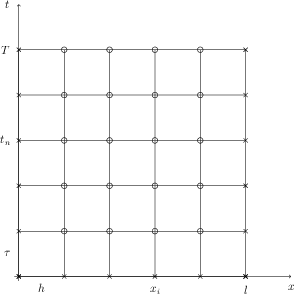
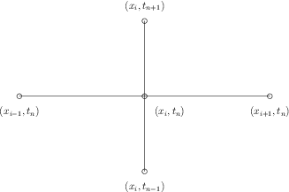

Рассмотрим одномерную математическую модель распространения колебаний на струне. Пусть струна в деформированном состоянии распространяется на интервале \( [0, l] \) оси \( x \) и \( u(x,t) \) --- перемещение по времени в направлении \( y \) точки, изначально лежащей на оси \( x \). Функция перемещения \( u(x,t) \) определяется следующей математической моделью: $$ \begin{align} \tag{1} \frac{\partial^2 u}{\partial t^2} &= c^2 \frac{\partial^2 u}{\partial x^2}, \quad x \in (0, l), \quad t \in (0, T], \\ \tag{2} u(x,0) &= I(x), \quad x \in [0, l],\\ \tag{3} \frac{\partial u(x,0)}{\partial t} &= 0, \quad x \in [0, l],\\ \tag{4} u(0,t) &= 0, \quad t \in (0, T],\\ \tag{5} u(l,t) &= 0, \quad t \in (0, T]. \end{align} $$ Постоянная \( c \) и функция \( I(x) \) --- заданы.
Уравнение (1) известно как волновое уравнение (уравнение колебаний струны). Так как это уравнение в частных производных содержит вторую производную по времени, необходимо задать два начальных условия. Условие (2) начальную форму струны, а условие (3) означает, что начальная скорость струны равна нулю. Кроме того уравнение (1) дополняется граничными условиями (4) и (5). Эти два условия означают, что струна закреплена на концах, т.е. перемещения равны нулю.
Пример колебаний струны
Перейдем к построению конечно-разностной аппроксимации задачи (1)--(5).
Для построения разностной схемы надо прежде всего ввести сетку в области изменения независимых переменных и задать шаблон, т.е. множество точек сетки, участвующих в аппроксимации дифференциального выражения. Введем равномерную сетку по переменному \( x \) с шагом \( h \) $$ \omega_h = \left\{ x_i = ih, \ i = 0, 1, \ldots, N, \ hN = l \right\}, $$ и сетку по переменной \( t \) с шагом \( \tau \) $$ \omega_{\tau} = \left\{ t_n = n\tau, \ n = 0, 1, \ldots, K, \ K\tau = T \right\}. $$ Точки \( (x_i,t_n) \), \( i = 0, 1, \ldots, N \), \( n = 0, 1, \ldots, K \), образуют узлы пространственно-временной сетки \( \omega_{h\tau} = \omega_h \times \omega_{\tau} \) (см. рис. 1)
Рисунок 1: Пространственно-временная сетка \( \omega_{h\tau} \).

Узлы \( (x_i,t_n) \), принадлежащие отрезкам \( I_0=\{0 \leq x \leq l,\ t = 0\} \), \( I_l=\{x = 0, \ 0 \leq t \leq T\} \), \( I_r=\{x = l, \ 0 \leq t \leq T\} \) называются граничными узлами сетки \( \omega_{h\tau} \), а остальные узлы --- внутренними. На рис. 1 граничные узлы обозначены крестиками, а внутренние кружочками.
Слоем называется множество всех узлов сетки \( \omega_h\tau \), имеющих одну и ту же временную координату. Так, \( n \)-м слоем называется множество узлов $$ (x_0, t_n), (x_1, t_n), \ldots, (x_N, t_n). $$ Очевидно, минимальный шаблон, на котором можно аппроксимировать уравнение (1), это пятиточечный шаблон, изображенный на рис. 2. Таким образом, здесь требуется использовать три временных слоя: \( n-1 \), \( n \), \( n+1 \). Такие схемы называются трехслойными. Их применение предполагает, что при нахождении значений \( y_i^{n+1} \) на верхнем слое значения на предыдущих слоях \( y_i^{n} \), \( y_i^{n-1} \), \( i = 0, 1, \ldots, N \) хранятся в памяти.
Рисунок 2: Минимальный шаблон трехслойной разностной схемы.

Простейшей разностной аппроксимацией уравнения (1) и граникных условий (4) и (5) является следующая система уравнений: $$ \begin{align} \tag{6} \frac{y_i^{n+1} - 2 y_i^{n} + y_i^{n-1}}{\tau^2} = \frac{y_{i+1}^n - 2 y_{i}^n + y_{i-1}^n}{h^2}, \\ i = 1, 2, \ldots, N-1, \ n = 1, 2, \ldots, K, \nonumber\\ \tag{7} y_0^{n+1} = y_N^{n+1} = 0, \quad n = 0, 1, \ldots, K-1. \end{align} $$
Разностное уравнение (1) имеет второй порядок погрешности аппроксимации по \( \tau \) и по \( h \). Решение \( y_i^{n+1} \) выражается явным образом через значения на предыдущих слоях: $$ \begin{align} \tag{8} y_i^{n+1} = 2 y_i^n - y_i^{n-1} + \gamma^2 (y_{i+1}^n - 2y_{i}^n + y_{i-1}^n), \\ i = 1, 2, \ldots, N-1, \ n = 1, 2, \ldots, K-1. \nonumber \end{align} $$
Здесь мы ввели параметр $$ \gamma = c\frac{\tau}{h}, $$ который называют числом Куранта.
Для начала счета по (8) должны быть заданы значения \( y_i^0, y_i^1 \), \( i = 0, 1, \ldots, N \). Из первого начального условия (2) сразу получаем $$ \begin{equation} \tag{9} y_i^0 = I(x_i), \quad i = 0, 1, \ldots, N. \end{equation} $$
Простейшая замена второго начального условия (3) уравнением \( (y_i^1 - y_i^0)/\tau = 0 \) имеет лишь первый порядок аппроксимации по \( \tau \). Поскольку уравнение (6) аппроксимирует уравнение (1) со вторым порядком, желательно, чтобы и разностное начальное условие также имело второй порядок аппроксимации. Построим такую аппроксимацию. Уравнение $$ \begin{equation} \tag{10} \frac{y_i^1 - y_i^{-1}}{2\tau} = 0, \end{equation} $$ аппроксимирует уравнение \( \frac{\partial u}{\partial t} = 0 \) со вторым порядком. Чтобы найти значения \( y_i^{-1} \) запишем уравнение (6) при \( n = 0 \): $$ \frac{y_i^1 - 2 y_i^0 + y_i^{-1}}{\tau^2} = y_{\bar{x}x,i}^0, $$
Из (10) имеем \( y^{-1} = y^{1} \). Отсюда получаем $$ \begin{equation} \tag{11} y_i^1 = y_i^0 + \frac{\gamma^2}{2} \left( y_{i+1}^0 - 2 y_{i}^0 + y_{i-1}^0 \right). \end{equation} $$ Совокупность уравнений (6), (7), (9) и (10) составляет разностную схему, аппроксимирующую исходную задачу (1)--(5).
Теперь мы можем сформулировать вычислительный алгоритм:
При реализации представленного алгоритма на Python будем использовать
массивы y[i] для хранения значений \( y_i^{n+1} \), y_1[i] для
хранения значений \( y_i^{n} \) и y_2[i] для хранения
\( y_i^{n-1} \). Можно считать, что используется следующее
соглашение о названии переменных: y используется для вычисляемого
пространственного распределения (сеточной функции) на новом временном
шаге, y_1 --- решение на временном шаге, отстоящем на один
временной слой назад, y_2 --- на два временных слоя назад и т.д.
Алгоритм использует только три временных слоя, таким образом, нам достаточно иметь только три массива для \( y_i^{n+1}, y_i^n \) и \( y_i^{n-1} \), \( i = 0, 1, \ldots, N \). Хранение всего решения в двумерном массиве размерности \( (N+1) \times (K+1) \) возможно в простейшем одномерном случае уравнений в частных производных, но не для двумерных и трехмерных задач. Таким образом, во всех программах для решения уравнений в частных производных мы будем хранить в памяти минимально возможное число временных слоев.
Следующий фрагмент кода реализует вычислительный алгоритм
# -*- coding: utf-8 -*-
# --- Start snippet 1 ---
# Заданные сетки как массивы x и t
dx = x[1] - x[0]
dt = t[1] - t[0]
C = c*dt/dx # Число Куранта
K = len(t) - 1
N = len(x) - 1
C2 = C**2
# Задаем начальное условие
for i in range(N+1) :
y_1[i] = I(x[i])
# Используем специальную формулу для расчета на первом
# временном шаге с учетом du/dt = 0
for i in range(N):
y[i] = y_1[i] - 0.5*C2(y_1[i+1] - 2*y_1[i] + y_1[i-1])
y[0] = 0; y[N] = 0 # Применяем граничные условия
# Изменяем переменные перед переходом на следующий
# временной слой
y_2[:], y_1[:] = y_1, y
for n in range(K) :
# Пересчитываем значения во внутренних узлах сетки на слое n+1
for i in range(1, N) :
y[i] = 2*y_1[i] - y_2[i] - C2*(y_1[i+1] - 2*y_1[i] + y_1[i-1])
# Задаем граничные условия
y[0] = 0; y[N] = 0
# Изменяем переменные перед переходом на следующий
# временной слой
y_2[:], y_1[:] = y_1, y
# --- End snippet 1 ---
# --- Start snippet 2 ---
i = 0
ip1 = i+1
im1 = ip1 # i-1 -> i+1
y[i] = y_1[i] + gamma2*(y_1[im1] - 2*y[i] + y_1[ip1])
i = N
im1 = i-1
ip1 = im1 # i+1 -> i-1
y[i] = y_1[i] + gamma2*(y_1[im1] - 2*y[i] + y_1[ip1])
# --- End snippet 2 ---
# --- Start snippet 3 ---
for i in range(0, N+1):
ip1 = i+1 if i < N+1 else i-1
im1 = i-1 if i > 0 else i+1
y[i] = y_1[i] + gamma2*(y_1[im1] - 2*y[i] + y_1[ip1])
# --- End snippet 3 ---
# --- Start snippet 4 ---
# Начальные условия
for i in Ix[1:-1]:
y[i] = y_1[i] - 0.5*gamma2*(y_1[i+1] - 2*y_1[i] + y_1[i-1])
# Цикл по времени
for i in It[1:-1]:
# Вычисление значений во внутренних узлах
for i in Ix[1:-1]:
y[i] = 2*y_2[i] - y_1[i] + \
gamma2*(y_1[i+1] - 2*y_1[i] + y_1[i-1])
# Вычисление граничных условий
i = Ix[0]; y[i] = 0
i = Ix[-1]; y[i] = 0
# --- End snippet 4 ---
Прежде чем реализовывать алгоритм, удобно добавить в уравнение (1) слагаемое, описывающее источник (правую часть), что даст свободу в выборе тестовых задач для верификации алгоритма.
Рассмотрим следующую смешанную задачу для неоднородного волнового уравнения: $$ \begin{align} \tag{12} \frac{\partial^2 u}{\partial t^2} &= c^2 \frac{\partial^2 u}{\partial x^2} + f(x, t), \quad x \in(0, l), \quad t \in (0, T],\\ \tag{13} u(x,0) &= I(x), \quad x \in [0, l],\\ \tag{14} \frac{\partial u(x,0)}{\partial t} &= V(x), \quad x \in [0, l],\\ \tag{15} u(0, t) &= 0, \quad t \in (0, T],\\ \tag{16} u(l, t) &= 0, \quad t \in (0, T]. \end{align} $$
Аппроксимируя задачу (12)--(16) (аналогично случаю однородного уравнения) разностной схемой второго порядка аппроксимации на сетке \( \omega_{h\tau} \), получим рекуррентное соотношение $$ \begin{align} \tag{17} y_i^{n+1} = 2 y_i^n - y_i^{n-1} + \gamma^2 (y_{i+1}^n - 2y_{i}^n + y_{i-1}^n) + \tau^2 f_i^n, \\ i = 1, 2, \ldots, N-1, \ n = 1, 2, \ldots, K-1. \nonumber \end{align} $$
Кроме того аппроксимируя начальное условие (14) со вторым порядком $$ \frac{y_i^1 - y_i^{-1}}{2\tau} = V(x_i) \Rightarrow y_i^{-1} = y_i^1 - 2\tau V(x_i), $$
для нахождения значений приближенного решения на первом временном слое получим $$ \begin{equation} \tag{18} y_i^1 = y_i^0 + \tau V(x_i) + \frac{\gamma^2}{2} \left( y_{i+1}^0 - 2 y_{i}^0 + y_{i-1}^0 \right) + \frac{\tau^2}{2} f_i^0. \end{equation} $$
Многие волновые задачи описывают синусоидальные по времени и пространству. Например, исходная задача (1)--(5) допускает точное решение $$ \begin{equation} \tag{19} u_e(x,t) = A \sin \frac{\pi x}{l} \cos \frac{\pi c t}{l} \end{equation} $$
Это решение удовлетворяет однородному волновому уравнению, однородным граничным условиям, а также начальным условиям \( I(x) = A\sin\frac{\pi x}{l} \) и \( V = 0 \).
Обычной практикой является использование точного решения для тестирования программной реализации. Однако численное решение \( y_i^n \) --- это только некоторое приближение точного. Мы не знаем величину погрешности этого приближения и, следовательно, мы не можем знать возникает ли разница между \( y_i^n \) и \( u_e(x_i,t_n) \) из-за математического приближения или из-за ошибок в программе. В частности, когда графики приближенного и точного решений выглядят похоже, возникает соблазн сделать заключение о том, что программная реализация работает правильно. Однако, даже если графики выглядят похоже и точность кажется хорошей, все равно в программной реализации могут присутствовать существенные ошибки.
Единственный способ использовать точное решение вида (19) при верификации программы заключается в выполнении ряда расчетов, сгущая сетку, вычисляя интегральную погрешность на каждой сетке, и на основе этого оценить скорость сходимости метода.
В нашем случае порядок сходимости метода равен 2 (см. следующий раздел), значит, вычисленная скорость сходимости должна быть близка к 2 на достаточно мелкой сетке.
Преимущество использования метода пробных функций заключается в том, что мы можем тестировать все варианты в задаче (12)--(16). Идея метода заключается в том, что мы выбираем некоторую функцию и получаем соответствующие правую часть, граничные и начальные условия, подставив эту функцию в задачу. Кроме того, мы можем выбирать функцию, которая удовлетворяет граничным условиям. Например, $$ u_e(x,t) = x(l - x) \sin t. $$
Подставляя эту функцию в уравнение (12), получаем $$ -x(l-x) \sin t = -c^2 2\sin t + f \Rightarrow f = (2 c^2 - x(l-x)) \sin t $$
Начальные условия будут следующие $$ u(x,0) = I(x) = 0, \\ \frac{\partial u(x,0)}{\partial t} = V(x) = x(l - x). $$
Для проверки программного кода, также нужно провести серию расчетов на последовательности сгущающихся сеток, чтобы оценить скорость сходимости в предположении, что некоторая мера \( E \) погрешности зависит от шагов сетки следующим образом $$ E = C_t \tau^r + C_x h^p, $$
где \( C_t, C_x, r \) и \( p \) --- постоянные. Постоянные \( r \) и \( p \) характеризуют порядок сходимости по времени и пространству соответственно. Из анализа погрешности аппроксимации разностной схемы, мы ожидаем, что \( r = p = 2 \).
Используя точное решение дифференциальной задачи, мы можем вычислить меру погрешности \( E \) на последовательности сгущающихся сеток и проверить наличие второго порядка точности \( r = p = 2 \). Мы не будем оценивать константы \( C_t \) и \( C_x \).
Удобно ввести один параметр дискретизации \( d = \tau = \hat{c} h \) с некоторой константой \( \hat{c} \). Так как \( \tau \) и \( h \) связаны числом Куранта \( \tau = \gamma h/c \), положим \( d = \tau \), тогда \( h = d c/\gamma \). Теперь выражения для меры в случае, когда \( p=r \), погрешности упрощается $$ E = C_t \tau^r + C_x h^r = C_t d^r + C_x \left( \frac{c}{\gamma} \right)^r d^r = D d^r, \quad D = C_t + C_x \left( \frac{c}{\gamma}\right)^r. $$
Выбирая начальный параметр дискретизации \( d_0 \), проводим серию расчетов для последовательности уменьшающихся шагов \( d_k = 2^{-k} d_0 \). Уменьшение шага в два раза необязательно, это обычный выбор. Для каждого расчета следует сохранять \( E \) и \( d \). Наиболее часто в качестве меры погрешности используются \( \ell^2 \)- или \( \ell^{\infty} \)-нормы сеточной функции погрешности \( e_i^n \): $$ \begin{align} \tag{20} E &= \| e_i^n\|_{\ell^2} = \left( \sum_{n = 0}^{K} \tau \sum_{i = 0}^{K} (e_i^n)^2 \right)^{1/2}, \quad e_i^n = u_e(x_i, t_n) - y_i^n,\\ \tag{21} E &= \| e_i^n \|_{\ell^{\infty}} = \max_{i,n} |e_i^n|. \end{align} $$
При программной реализации на языке Python мы можем вычислить на
каждом временном шаге \( \sum_{i} (e_i^n)^2 \), а затем аккумулировать
значение в некоторой переменной, например, e2_sum. А на последнем
временном шаге выполнить что-то подобное sqrt(dt*dx*e2_sum). Для
\( \ell^{\infty} \)-нормы нужно сравнить максимум погрешности на
временном слое e.max() с глобальной погрешностью, полученной на предыдущих
временных слоях, например, так: e_max = max(e_max, e.max()).
Альтернативный способ измерения погрешности состоит в использовании только пространственной нормы на временном шаге, например, при значении времени \( T \) (\( n = K \)): $$ \begin{align} \tag{22} E &= \| e_i^K \|_{\ell^2} = \left( \sum_{i = 0}^{K} (e_i^K)^2 \right)^{1/2}, \quad e_i^K = u_e(x_i, t_K) - y_i^K,\\ \tag{23} E &= \| e_i^K \|_{\ell^{\infty}} = \max_{0 \leq i \leq N} |e_i^K|. \end{align} $$
Главное, что мера погрешности \( E \) --- это одно число.
Пусть \( E_k \) --- мера погрешности при расчете с номером \( k \) и пусть \( h_k \) --- соответствующий параметр дискретизации. Учитывая, что \( E_k = D d_k^r \) мы можем оценить \( r \), сравнивая два последовательных расчета $$ E_{k+1} = D d_{k+1}^r, \quad E_k = D d_k^r. $$ Отсюда, выражая \( r \), получим $$ r_k = \frac{\ln E_{k+1}/E_k}{\ln d_{k+1}/d_k}. $$
Так как \( r \) зависит от \( k \), то добавили индекс к \( r \): \( r_k \), \( k = 0, 1, \ldots, m - 2 \), где \( m \) --- количество проведенных расчетов: \( (d_0, E_0), (d_1, E_1),\ldots, (d_m, E_m) \).
В нашем случае ожидается, что \( r = 2 \) и, следовательно, последовательность \( r_k \) должна стремиться к \( 2 \) с ростом \( k \).
Используя метод пробных функций и точное аналитическое решение дифференциальной задачи, как упоминалось выше, мы можем оценить скорость сходимости и правильное асимптотическое поведение. Опыт показывает, что этот способ верификации достаточно хорош, так как многие ошибки в программной реализации приводят к нарушению скорости сходимости. Однако нам кажется, что для верификации программной реализации, более точный тест тот, который позволяет проверить совпадает ли численное решение с тем, которое точно должно быть. Это требует точного знания численной погрешности, которого мы обычно не можем получить. Однако, можно рассмотреть решение, для которого численная погрешность равна нулю, т.е. решение исходной дифференциальной задачи, которое так же является точным решением разностной схемы. Это часто возникает, когда решением дифференциальной задачи является полином небольшой степени. (Анализ погрешности аппроксимации приводит к оценке погрешности, содержащей производные решения. В нашем случае, погрешность аппроксимации содержит производные четвертого порядка по пространству и времени. Выбирая в качестве точного решения полином степени не выше третьей, мы получим погрешность равную нулю.)
Рассмотрим построение точного решения как дифференциальной так и разностной задачи. Выберем в качестве пробной функции полиномиальную (второго порядка по пространственной переменной и первого по временной переменной): $$ \begin{equation} \tag{24} u_e(x,t) = x(l - x)(1 + 0.5 t), \end{equation} $$
которое дает \( f(x,t) = 2(1+t)c^2 \). Это решение удовлетворяет однородным граничным условиям (15) и (16), а также начальным условиям (13) с \( I(x) = x(l - x) \) и (14) с \( V(x) = 0.5 x(l - x) \).
Чтобы убедиться, что \( u_e \) является точным решением разностной схемы выполним вычисления $$ \begin{align*} u_{e\bar{t}t,i}^n &= x_i(x_i-l) (t)_{\bar{t}t}^n \nonumber\\ &= x_i(x_i-l) \frac{1 + 0.5t_{n+1} - 2 - t_n + 1 + 0.5t_{n-1}}{\tau^2} \nonumber\\ &= x_i(x_i-l) \tau \frac{0.5(n+1) - n + 0.5(n-1)}{\tau^2} = 0, \nonumber\\ u_{e\bar{x}x,i}^n &= (1 + 0.5 t_n) (l x - x^2)_{\bar{x}x,i} \nonumber\\ &= (1 + 0.5t_n) (l(x)_{\bar{x}x,i} - (x^2)_{\bar{x}x,i}) \nonumber\\ &= - (1 + 0.5t_n) \frac{x_{i+1}^2 - 2x_i^2 + x_{i-1}^2}{h^2} \nonumber\\ &= - (1 + 0.5t_n) h^2 \frac{(i+1)^2 - 2i^2 + (i-1)^2}{h^2} \nonumber\\ &= -2(1 + 0.5 t_n). \nonumber \end{align*} $$
Отсюда, \( f_i^n = 2(1 + 0.5 t_n)c^2 \). Кроме того, \( u_e(x_i,0) = I(x_i) \) и \( \frac{\partial u(x,0)}{\partial t} = V(x_i) \), а также \( u_e(x_i,t_n) \) удовлетворяет разностному уравнению для вычисления приближенного решения на первом временном шаге (18).
Таким образом, точное решение дифференциальной задачи (24) является точным решением разностной схемы. Мы можем использовать его для проверки совпадения вычисленного приближенного решения \( y_i^n \) со значением \( u_e(x_i, t_n) \) с учетом машинной точности, независимо от значения временных шагов \( h \) и \( \tau \). Тем не менее, следует учитывать ограничения на шаги из условия устойчивости, т.е. тесты следует выполнять только на сетках удовлетворяющих условию устойчивости, которое в нашем случае имеет вид \( \gamma \leq 1 \) и будет получено позже.
Произведение квадратичного или линейного выражений от разных независимых переменных, как показано выше, часто является точным решением как дифференциальной так и разностной задач, и может использоваться для верификации программной реализации алгоритма.
Однако, для одномерного волнового уравнения вида \( \frac{\partial^2 u}{\partial t^2} = c^2 \frac{\partial^2 u}{\partial t^2} \), как мы увидим далее, существует другой способ генерации точных решений, который состоит в только выборе числа Куранта равным единице, \( \gamma = 1 \)!